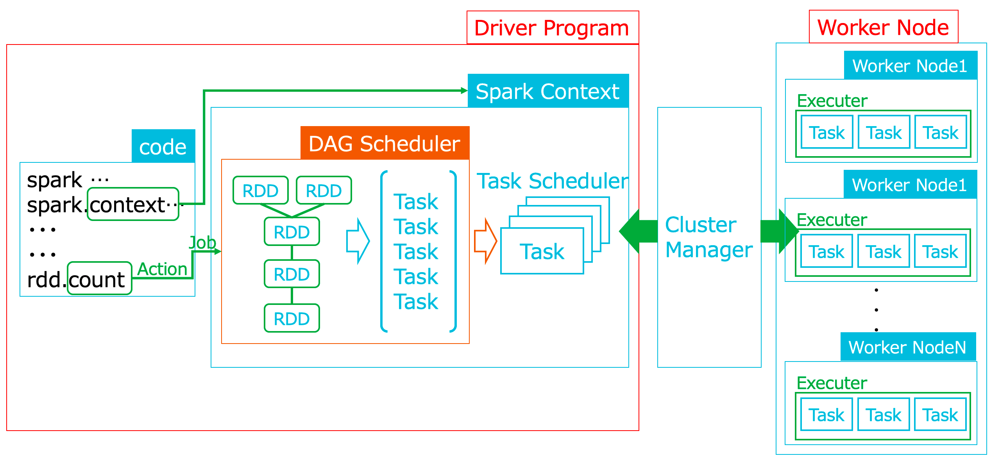

Sparkについて
Apache Sparkとは
Apache Sparkはカリフォルニア大学バークレー校のAMP Labで開発されたオープンソースプロダクトです。Sparkは、大きなデータセットを処理および分析するための次世代のビッグデータ処理フレームワークです。 Sparkは、Scala、Python、Java、R言語による高レベルAPIサポート、Spark SQL、Streaming、機械学習のMLlib、グラフ処理用のGraphXなどを強力なライブラリを提供する統合処理フレームワークです。後にApache Software Foundationに寄付され、2014年2月24日にApacheトップレベルのプロジェクトになりました。
Sparkの概要
SparkはHadoopのデータ処理フレームワークであるMapReduceの多くの処理制限問題を認識し、反復的でインタラクティブなアプリケーションを処理できる、より高速でより汎用的に利用できるデータ処理フレームワークとして開発されました。SparkのJobは、メモリ内の高速機能と高度なDAG（Directed Acyclic Graph）実行エンジンにより、同等のMapReduceジョブよりも10〜100倍高速に実行できます。データサイエンティスト、分析エンジニアからすれば、SparkはどのMapReduce処理よりも最も生産的な位置付けとなっています。

Sparkは一見シンプルですが強力なAPIにより、非常に利用・汎用しやすくなっています。 Sparkは以下をサポートする統合プラットフォームを提供します。現在、Sparkはデータサイエンティスト、分析エンジニアにとって重要な存在となっています。ストリーミング、インタラクティブ処理、ETL、機械学習、バッチ処理、Delta Lake運用、container/Kubernetes、Function as a Serivce、超高速HTAPなど、幅広い分野へ広まっています。手法は別章にて紹介いたします。

Cluster Managers
Cluster Managersはアプリケーションのクラスタリソースを割り当て、管理をしています。Sparkは、Spark（Standalone Scheduler）、YARN、およびMesosに付属しているスタンドアロンのCluster Managersをサポートしています。またKubernetesをCluster Managersとして利用することも可能です。このテクニカルサイトにも手法を記載いたしますが、詳細についてはこちらを参照してください。
https://apache-spark-on-k8s.github.io/userdocs/running-on-kubernetes.html
Sparkのアーキテクチャ
Sparkはコード内容（処理内容）をSparkアプリケーションタスクとして以下の画像のように複数のクラスターノードへ分散し処理することができます。すべてのSparkアプリケーションには、Driver ProgramにSpark Contextというオブジェクトがあります。Spark ContextはCluster Managersへの接続を意味しており、Sparkアプリケーションにコンピューティングリソースを提供します。Hadoop分散モードの上で実行となれば、マスターノードで実行、これがスレーブノードへ処理したいリソースを提供となります。
クラスターに接続した後、SparkはWorker NodeでExecuterを取得します。その後、SparkはアプリケーションコードをExecuterに送信します。通常、アプリケーションはSparkアクションに応じて1つ以上のジョブを実行します。その後、各ジョブはSparkによって小さな有向非周期グラフ（DAG）に分割されます。その後、各タスクは分散され、実行のためにワーカーノード全体のExecuterに送信されます。各Sparkアプリケーションは、独自のExecuterのセットを取得します。異なるアプリケーションのタスクは異なるJVMで実行されるため、Sparkアプリケーションは別のSparkアプリケーションと干渉することはないです。（＝処理内容が重複、コンフリクトすることがない構造）これはHDFSやS3などの低速の外部データソースを使用しないと、Sparkアプリケーション同士がデータを共有することは難しいことを意味します。一方、AlibabaCloudのSparkはJindoFSを使うと、ワーカーノードがOSSら外部データソースとマルチ接続し分散処理されるため、OSSに対してデータ共有をより速く、かつ簡単に読み込み、書き込みすることができます。JindoFSや手法は別章にて紹介いたします。

Spark on YARN
YARNはHadoopベースのCluster Managersです。YARNでSparkアプリケーションを起動するためには2つの方法があります。
Cluster Mode
Cluster Modeの場合、Driver Program は YARNによってアプリケーションを管理、実行されます。そのため、クライアントはアプリケーションの実行に影響を与えることなく終了できます。
アプリケーション、またはSpark Shellをクラスタモードで起動するには以下のコマンドになります。
spark-shell --master yarn --deploy-mode cluster
spark-submit --class myPath.myClass --master yarn --deploy-mode clusterClient Mode
Client Modeの場合、Driver Program はクライアントのマシンで実行されます。アプリケーションマスターは、YARNからリソースを要求する時のみ使用されます。
クライアントモードでアプリケーション、またはSpark Shellをクラスタモードで起動するには以下のコマンドになります。
spark-shell --master yarn --deploy-mode client
spark-submit --class myPath.myClass --master yarn --deploy-mode clientSpark-Shell
通常、アドホックデータの分析または調査にはSpark-Shellという対話型シェルを使用します。また、Spark-ShellはSpark APIを学習・調査するにも優れたツールです。SparkのShellはScalaまたはPythonで使用できます。
[root@emr-header-1 ~]# su hadoop
[hadoop@emr-header-1 root]$ pyspark
Python 2.7.5 (default, Apr 11 2018, 07:36:10)
[GCC 4.8.5 20150623 (Red Hat 4.8.5-28)] on linux2
Type "help", "copyright", "credits" or "license" for more information.
Setting default log level to "WARN".
To adjust logging level use sc.setLogLevel(newLevel). For SparkR, use setLogLevel(newLevel).
19/08/21 20:42:29 WARN HiveConf: HiveConf of name hive.server2.enable.impersonation does not exist
19/08/21 20:42:30 WARN Utils: Service 'SparkUI' could not bind on port 4040. Attempting port 4041.
Welcome to
____ __
/ __/__ ___ _____/ /__
_\ \/ _ \/ _ `/ __/ '_/
/__ / .__/\_,_/_/ /_/\_\ version 2.4.3
/_/
Using Python version 2.7.5 (default, Apr 11 2018 07:36:10)
SparkSession available as 'spark'.
>>> SparkSession
前述したように、CodeにてSparkContextを使用すると、Sparkの全ての機能にアクセスできます。Driver Programは、SparkContextを使用して、StreamingContext、SQLContext、HiveContextなどの他のコンテキストにアクセスできます。
#!/usr/bin/env python
# -*- coding: utf-8 -*-
from pyspark import SparkContext
filePath = "./train.csv"
sc = SparkContext("local", "Simple App")
data = sc.textFile(filePath).cache()
Miss = data.filter(lambda s: 'Miss' in s).count()
Mr = data.filter(lambda s: 'Mr.' in s).count()
print "Miss: %d, lines with Mr.: %d" % (Miss, Mr)
sc.stop()RDDとは
RDDはResilient Distributed Dataset、Sparkクラスタ内の1つ以上のノードに分割されたオブジェクトの復元力のある不変の分散コレクションです。RDDは変換とアクションの2種類の操作によって並行処理および操作ができます。RDDは復数のマシンから構成されるクラスタ上での分散処理を前提として設計されており、内部的にはパーティションに分割されています。Sparkはこのパーティションが分散処理の単位となり、パーティションごとに復数のマシンで処理することによって、単一のマシンでは処理しきれない大量のデータを扱うことができます。以下、RDDを使った処理例を記載してみます。
RDD : parallelize
parallelizeはリストやタプルからRDDを作ります。
a = [1, 2, 3, 4, 5]
rdd = sc.parallelize(a)RDD : textFile
textFileはファイルを読み込みます。ワイルドカードや正規表現も使用可能です。
filePath = "./train.csv"
rdd = sc.textFile(filePath)
filePath2 = "./*.csv"
rdd = sc.textFile(filePath2)RDD : wholeTextFiles
wholeTextFilesはディレクトリの各ファイルの内容全体をそれぞれRDDの一つの要素にセットするものです。
# $ ls
# aaaa.json bbbb.json cccc.json
>>> rdd = sc.textWholeFiles("./")Transformations
Transformationsは名前通り、RDDの変換処理です。RDDの変換は既存のRDDを変化させるわけでなく、新しいRDDを生成するための変換処理です。最もよく使われる変換処理のいくつかを記載します。（他はSparkの公式ドキュメントを閲覧してください。）
| メソッド | 備考 |
|---|---|
| Filter | 条件を満たす要素のみ抽出 |
| Map | 各要素に関数を適用して別の要素に変換 |
| Flatmap | 各要素に関数を適用して別の要素に変換。関数の返り値はイテレータ |
| Distinct | 重複する要素を取り除く |
| ReduceByKey | キー毎に要素同士を演算処理 |
| Keys | 要素のタプル(Key, Value)からキーのみに変換 |
| Values | 要素のタプル(Key, Value)から値のみに変換 |
| Join | 要素のタプル(Key, Value)を使って他のRDDと結合 |
| Union | 他のRDDと結合。単純にパーティション数が増えます |
| Subtract | 他のRDDとの差集合を生成 |
RDD：Transformations：Map
各要素に関数を適用して別の要素に変換
rdd = sc.parallelize([1, 2, 3])
rdd2 = rdd.map(lambda x: x * 2).collect()RDD：Transformations：Flatmap
各要素に関数を適用して別の要素に変換。関数の返り値はイテレータ
rdd = sc.parallelize(["This is a pen", "This is an apple"])
rdd2 = rdd.flatMap(lambda x: x.split()).collect()RDD：Transformations：Filter
条件を満たす要素のみ抽出
rdd = sc.parallelize([1, 2, 3])
rdd2 = rdd.filter(lambda x: x % 2 == 0).collect()RDD：Transformations：Distinct
重複する要素を取り除く
a = [1, 2, 3, 2, 1]
rdd = sc.parallelize(a)
rdd2 = rdd.distinct()RDD：Transformations：ReduceByKey
キー毎に要素同士を演算処理
rdd = sc.parallelize(Seq("a"->1, "b"->2, "c"->3, "a"->4))
rdd2 = rdd.reduceByKey(_ + _)RDD：Transformations：Keys
要素のタプル(Key, Value)からキーのみに変換
rdd = sc.parallelize(Seq("a"->1, "b"->2, "c"->3, "a"->2))
keys = rdd.keysRDD：Transformations：Value
要素のタプル(Key, Value)から値のみに変換
rdd = sc.parallelize(Seq("a"->1, "b"->2, "c"->3, "a"->2))
values = rdd.valueRDD：Transformations：Join
要素のタプル(Key, Value)を使って他のRDDと結合
rdd1 = sc.parallelize(Seq("a"->1, "b"->2, "a"->3, "b"->4))
rdd2 = sc.parallelize(Seq("b"->"foo", "c"->"bar"))
rdd = rdd1.join(rdd2)RDD：Transformations：Union
他のRDDと結合。単純にパーティション数が増えます
a = [1, 2, 3, 4, 5]
b = [6, 7, 8, 9]
rdd1 = sc.parallelize(a)
rdd2 = sc.parallelize(b)
rdd = rdd1.union(rdd2)RDD：Transformations：Subtract
他のRDDとの差集合を生成
a = [1, 2, 3, 4, 5]
b = [6, 7, 8, 9]
rdd1 = sc.parallelize(a)
rdd2 = sc.parallelize(b)
rdd = rdd1.subtract(rdd2)RDD：Coalesce
Coalesceは、RDD内のパーティションの数を減らす処理です。大きなRDDでフィルタなどの加工・抽出処理を実行した後、フィルタリングにより新しいRDDのデータ量は減りますが、元のRDDパーティション数は継承されます。そのため、新しいRDDが元のRDDよりも大幅に小さい場合、パフォーマンス上の問題が発生してしまいます。そのため、RDDの大きなデータ増減処理後、Coalesceを使ってパーティションの数を減らしておくといいです。
また、HDFSへの書き込み時、Sparkによって生成されるファイルの数を減らした場合、hdfsのファイルブロックサイズ（64〜256MB）より小さい「小さなファイル」を書き込むと問題が発生してしまいます。そのためにCoalesceと合体関連（Unionなど）を使って処理すると問題を回避できます。各パーティションはHDFSに個別のファイルとして書き込まれます。HDFSにParquetファイルを1つだけ書き込む例を記載してみます。
rdd.coalesce(l).write.mode("append").parquet("/user/root/hadoop/Table")
RDD：Repartition
RepartitionはRDD内のパーティションの数を減らすことも増やすこともできます。再分割よりも効率的であるため、パーティションを削減する場合は通常、Coalesceと合体変数の組み合わせを使用します。一方、こちらはパーティションの数を増やすことができるため、hdfsのファイルブロックサイズ（64〜256MB）の条件からしてHDFSに書き込む際の並列度が向上するため便利です。6つのParquetファイルをHDFSに書き込む例を記載してみます。
rdd.repartition(6).write.mode("append")•parquet("/user/root/hadoop/Table")Actions
Actionsは、driver programに値を返すRDD操作です。最もよく使われる変換処理のいくつかを記載します。（他はSparkの公式ドキュメントを閲覧してください。）
| メソッド | 備考 |
|---|---|
| collect | 全ての要素を返します |
| Foreach | 全ての要素に対して演算を行い、ドライバプログラムには何も返さずに保持します |
| Take | 最初n個の要素を返します |
| Count | 要素数を数えて返します |
| first | 一番最初の要素を返します |
| top | 大きいものからn個要素を返します |
| mean | 平均を返します |
| sum | 合計を返します |
| variance | 分散を返します |
| stdev | 標準偏差を返します |
| saveAsTextFile | ファイルを保存します |
Actions : collect
全ての要素を返します
a = [1, 2, 3]
rdd = sc.parallelize(a)
print(rdd.collect())Actions : Foreach
全ての要素に対して演算を行い、ドライバプログラムには何も返さずに保持します
a = [1, 2, 3]
rdd = sc.parallelize(a)
rdd.collect.Foreach(printin)Actions : Take
最初n個の要素を返します
a = [1, 2, 3]
rdd = sc.parallelize(a)
print(rdd.take(2))Actions : Count
要素数を数えて返します
a = [1, 2, 3]
rdd = sc.parallelize(a)
rdd.count()Actions : first
一番最初の要素を返します
a = [1, 2, 3]
rdd = sc.parallelize(a)
rdd.first()Actions : top
大きいものからn個要素を返します
a = [1, 2, 3]
rdd = sc.parallelize(a)
rdd.top(2)Actions : mean
平均を返します
a = [1, 2, 3]
rdd = sc.parallelize(a)
rdd.mean()Actions : sum
合計を返します
a = [1, 2, 3]
rdd = sc.parallelize(a)
rdd.sum()Actions : variance
分散を返します
a = [1, 2, 3]
rdd = sc.parallelize(a)
rdd.variance()Actions : stdev
標準偏差を返します
a = [1, 2, 3]
rdd = sc.parallelize(a)
rdd.stdev()Actions : saveAsTextFile
ファイルを保存します
rdd.saveAsTextFile("./words.txt")遅延評価
Sparkはビッグデータ処理に必須な遅延評価をサポートします。 遅延評価とは、値が必要になるまで、値の評価を後回しにすることです。Sparkのすべての変換処理は遅延評価のため、すぐに変換を実行せず、さらに変換を定義し続けることができます。最終的な最終結果が必要な場合は、Actionを実行します。これにより、変換が実行されます。
永続化（キャッシング）
上記、SparkのRDDは遅延評価されるため、Actionが呼ばれるたびにデータをロードして計算し直されるのが一般です。これでは非効率なので、同じRDDを何回もアクションで再利用したいのであれば、永続化させることで複数回計算されることを防ぐことができます。
| 永続化レベル | 永続化先 | シリアライズ |
|---|---|---|
| DISK_ONLY | ディスクのみに格納 | 有 |
| MEMORY_ONLY | メモリのみに格納 | 無 |
| MEMORY_ONLY_SER | メモリのみに格納 | 有 |
| MEMORY_AND_DISK | メモリからあふれた分はディスクに格納 | 無 |
| MEMORY_AND_DISK_SER | メモリからあふれた分はディスクに格納 | 有 |
RDDに対する永続化宣言はRDD処理を記載する前に呼び出す必要があります。
a = [1, 2, 3]
rdd = sc.parallelize(a)
rdd.persist( pyspark.StorageLevel.MEMORY_AND_DISK_2 )
rdd.getStorageLevel()
print(rdd.getStorageLevel())メモリ容量を超える処理をする場合
Spark経験者ならば「Sparkはよく落ちる」と話をしますが、これはオンメモリ上でMapReduce処理、メモリを保持して処理するため、メモリリソースが高いことから発生する問題です。これはメモリサイズが適切でないと、GCがFull状態、これによって、古いパーティションを保持した不要なメモリが解放されます。Full GC実行後、解放されたメモリ量が前回5回分のFull GCの2.5%を下回ると、JVMはOut of Memory例外を発生させ、落ちるようになります。 ※Sparkのデフォルトは、Executorに1GBのメモリが割り当てられています。 そのために、永続化を使って落ちないように処理するなど工夫が必要です。メモリで永続化の場合、メモリに収まり切らなかった場合、そのパーティションはディスクに書き出されます。 また、永続化を繰り返ししすぎるとディスクを消費（メモリに書ききれなかったからディスクに一時保持）するため処理が遅くなるなど問題が出ますので、利用しないRDDがあれば、unpersistなどで永続化を解除するなどチューニングをしてください。
Spark SQL、Dataset、およびDataFrames API
Sparkの素晴らしいところは構造化、非構造化および半構造化データ（ビデオ分析、画像処理、テキストマイニングを含む）での分析や処理ができることです。ここで大量の構造化、非構造化および半構造化データがあるとして、Sparkはそれに応えるよう様々なAPIをサポートしています。SparkSQLはSparkデータエンジニアとデータサイエンスが構造化データを簡単に処理および分析できるように開発されました。DatasetはRDDに似ていますが、内部でははるかに効率的な処理エンジンを備えています。Spark2.0から、Dataset APIが主要なプログラミングインターフェイスになりました。DataFrameは、リレーショナルテーブルに非常によく似た名前付きの列を持つ単なるデータセットです。Spark SQLとDataFramesを組み合わせることで、構造化データの処理と分析のための強力なプログラミングインターフェイスが提供されます。Spark SQLとDataFramesの使用方法の簡単な例を次に示します。
sc = spark.sparkContext
path = "examples/src/main/resources/people.json"
peopleDF = spark.read.json(path)
# スキーマ表じ
peopleDF.printSchema()
# root
# |-- age: long (nullable = true)
# |-- name: string (nullable = true)
# DataFrameを使用して一時的なビューを作成
peopleDF.createOrReplaceTempView("people")
# Spark SQLでpeopleというテーブル（DataFrame）にクエリを投げます
teenagerNamesDF = spark.sql("SELECT name FROM people WHERE age BETWEEN 13 AND 19")
teenagerNamesDF.show()
# +------+
# | name|
# +------+
# |Justin|
# +------+
# または次のJSONデータセットに対してDataFrameを作成することもできます。
jsonStrings = ['{"name":"Yin","address":{"city":"Columbus","state":"Ohio"}}']
otherPeopleRDD = sc.parallelize(jsonStrings)
otherPeople = spark.read.json(otherPeopleRDD)
otherPeople.show()
# +---------------+----+
# | address|name|
# +---------------+----+
# |[Columbus,Ohio]| Yin|
# +---------------+----+Spark Data Sources
Sparkは様々なデータソースを提供しています。CSV、XML、JSON、HDFS、Parquet、odbc、jdbc、などとあります。以下、いくつか例を記載します。
CSV
CSVの読み込み方法です。
df = sc.textFile("test.csv").toDF(['Col1','Col2'])XML
XMLの読み込み方法です。
df = sqlContext.read
.option("rowTag", "book")
.load("test.xml")JSON
JSONの読み込み方法です。
df = spark.read.json("test.json")Relational Databases Using JDBC
JDBCドライバはMySQLの他 Oracle、SQL Server、PostgreSQLなどの他のリレーショナルデータベースもサポートしています。リレーショナルデータベースにJDBC/ODBCドライバーがある限り、Sparkからアクセスできます。パフォーマンスは、JDBC/ODBCドライバーのバッチ操作のサポートに依存となります。
jdbcDF = spark.read \
.format("jdbc") \
.option("url", "jdbc:postgresql:dbserver") \
.option("dbtable", "schema.tablename") \
.option("user", "username") \
.option("password", "password") \
.load()Parquet
Parquetの読み込み方法です。
parquetFile = spark.read.parquet("people.parquet")
parquetFile.createOrReplaceTempView("parquetFile")
teenagers = spark.sql("SELECT name FROM parquetFile WHERE age >= 13 AND age <= 19")
teenagers.show()
# +------+
# | name|
# +------+
# |Justin|
# +------+Spark MLlib (DataFrame-Based API)
機械学習（Machine Learning、以下MLと略します）はSparkの主要なアプリケーションの１つです。上記、DataFrameをベースとした、Spark MLlibによる機械学習ができます。DataFramesベースはRDDベースよりも高速で使いやすく、ユーザーはSQLを使用して、Catalystやデータ内容の最適化などができます。 SparkのDataFrameの優れてるところは、機械学習パイプラインで機能変換が容易に行えることです。図のように、元々のDataFrameから機械学習用のDataFrame2へ下準備（変換）、そしてTF-IDF（単語の頻度の評価、機械学習の一つ）を実施し、その結果をDataFrame3として出力することができます。この一連をPipelineと呼びます。

Pipeline
Pipelineは、機械学習のワークフローを作成するための接続された一連処理のことをさします。GPU演算処理が必要な大規模計算処理でも、このパイプラインを確立することで、並列分散で演算処理を行うことも可能なので、機械学習を行う上では重要な位置付けになります。
Transformer
Transformerは入力としてDataFrameを受け取り、新しいDataFrameに追加の列が追加された新しいDataFrameを出力します。
Spark MLlibによる機械学習の例を記載します。ここは使い方、イメージとして理解いただければと思います。より詳しいこと、Sparkによる機械学習、分散学習は別の章にて記載いたします。
from pyspark.ml.linalg import Vectors
from pyspark.ml.classification import LogisticRegression
training = spark.createDataFrame([
(1.0, Vectors.dense([0.0, 1.1, 0.1])),
(0.0, Vectors.dense([2.0, 1.0, -1.0])),
(0.0, Vectors.dense([2.0, 1.3, 1.0])),
(1.0, Vectors.dense([0.0, 1.2, -0.5]))], ["label", "features"])
lr = LogisticRegression(maxIter=10, regParam=0.01)
# Print out the parameters, documentation, and any default values.
print("LogisticRegression parameters:\n" + lr.explainParams() + "\n")
model1 = lr.fit(training)
print("Model 1 was fit using parameters: ")
print(model1.extractParamMap())
paramMap = {lr.maxIter: 20}
paramMap[lr.maxIter] = 30 # Specify 1 Param, overwriting the original maxIter.
paramMap.update({lr.regParam: 0.1, lr.threshold: 0.55}) # Specify multiple Params.
paramMap2 = {lr.probabilityCol: "myProbability"} # Change output column name
paramMapCombined = paramMap.copy()
paramMapCombined.update(paramMap2)
model2 = lr.fit(training, paramMapCombined)
print("Model 2 was fit using parameters: ")
print(model2.extractParamMap())
test = spark.createDataFrame([
(1.0, Vectors.dense([-1.0, 1.5, 1.3])),
(0.0, Vectors.dense([3.0, 2.0, -0.1])),
(1.0, Vectors.dense([0.0, 2.2, -1.5]))], ["label", "features"])
prediction = model2.transform(test)
result = prediction.select("features", "label", "myProbability", "prediction") \
.collect()
for row in result:
print("features=%s, label=%s -> prob=%s, prediction=%s"
% (row.features, row.label, row.myProbability, row.prediction))
GraphX
Sparkには、GraphXと呼ばれるグラフ処理フレームワークが含まれています。DataFramesに基づくGraphFramesと呼ばれる別のパッケージがあります。
GraphXは現在開発中・バージョンごとに仕様が変化している（進化段階）状態なので、本テクニカルガイドではGraphXは扱わず、詳しいことは本サイトにて確認頂ければ幸いです。
Spark Streaming
Spark2.0には、Structured Streamingと呼ばれる新しいストリーム処理フレームワークが含まれています。SparkSQLの上に構築された高レベルのストリーミングAPIです。別の章にて説明します。
まとめ
Apache Sparkは、ビッグデータ処理フレームワークとして強力な位置付けとなっています。データサイエンティスト、エンジニアはSparkが使いやすく、様々な画面で大いに役立ちます。Sparkがあることで、KuduやHBaseと連携処理することも可能ですし、他のHadoopエコシステムと連携することで更に利便になります。AlibabaCloudにはMaxCompute、E-MapReduce、ContainerにSparkを実装しており、Sparkをフル活用することでBigData運用が非常に楽になります。